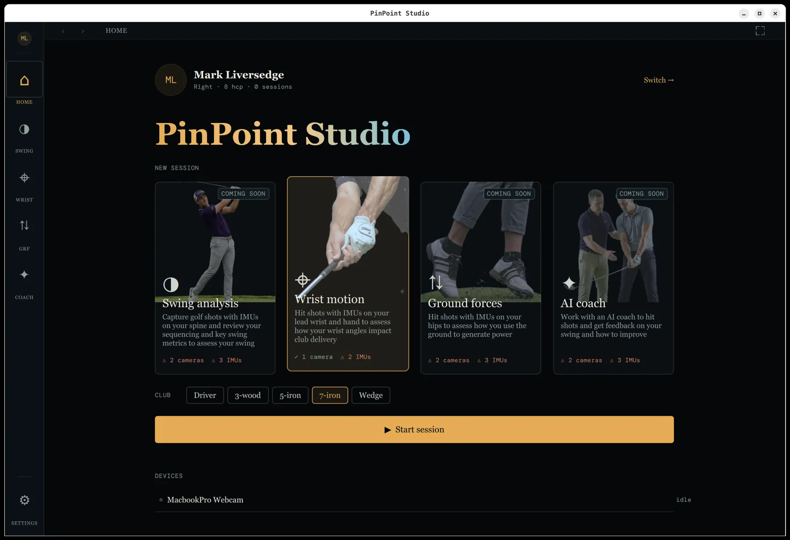
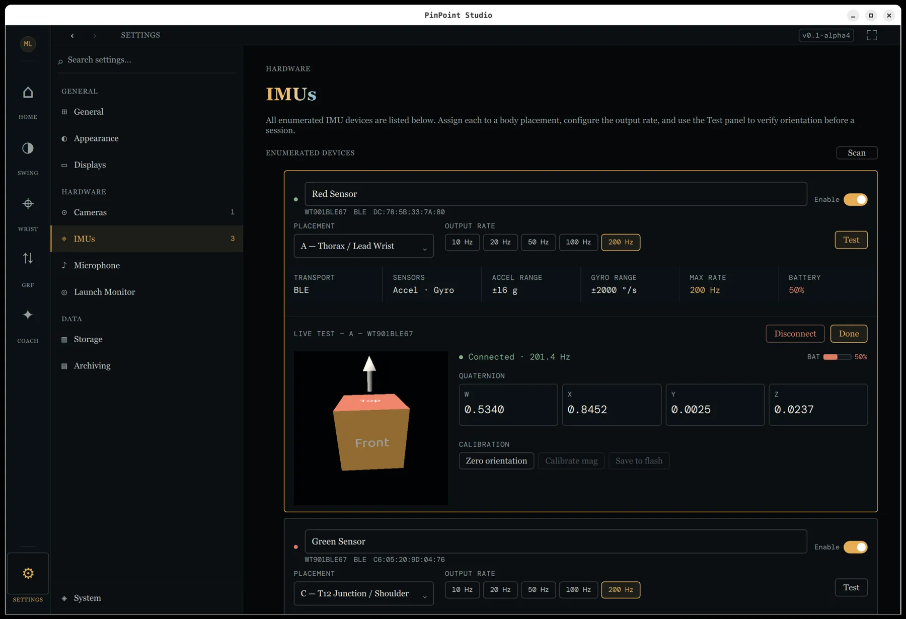
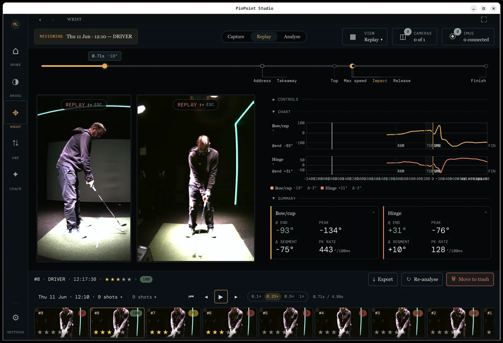
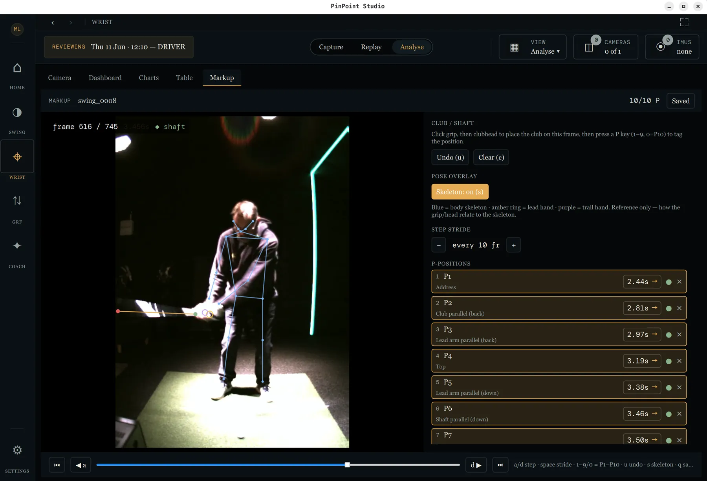
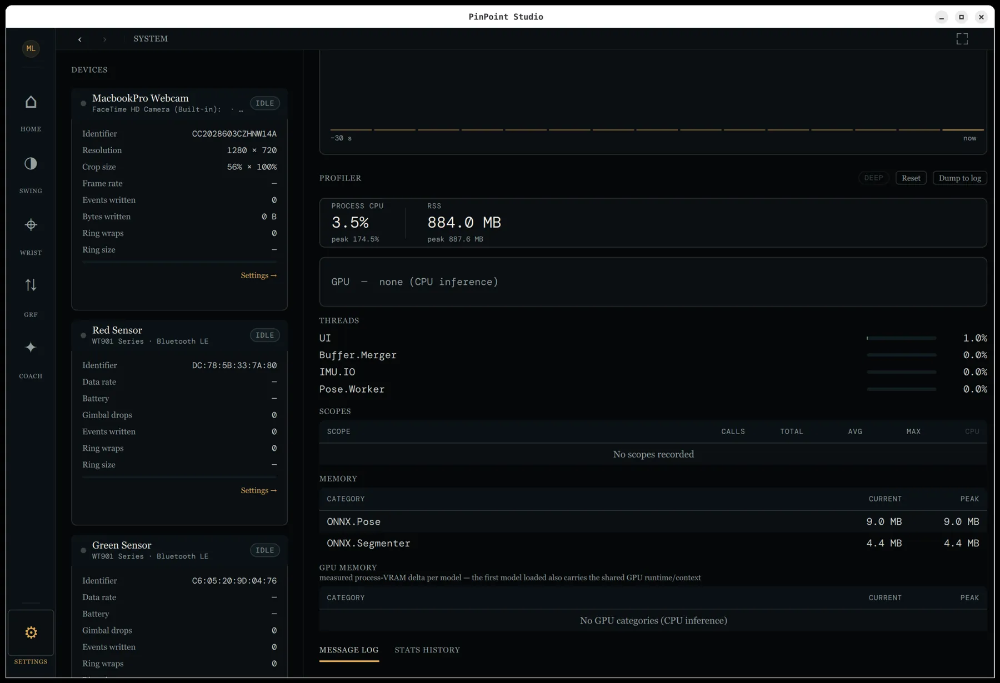

Your launch monitor measures the ball.We measure you.
If you run a studio, you've already got the cameras, the PC and the launch monitor — so the outcome of every shot is no mystery. What's missing is what your body actually did to produce it, and whether you're really making the moves your coach asked for. That's the gap PinPoint Studio fills — and why it's named for the room it's built for.
In active development Prototyping & validating now · first release targeted late 2026
From the author of GoldenCheetah.
Illustrative — peak values are indicative; the kinematic sequence chart is in development.
Inside the studio.
A first look at the desktop app as it stands today — from setting up your kit, through replaying a swing beside its numbers, to marking swings up by hand for validation.





Screens from the current pre-release build — the interface is still evolving.
Peer-reviewed science, in your hands.
PinPoint Studio exists to put the measurements the research actually supports into the hands of coaches, players and enthusiasts — methods drawn from the published literature, kept open for anyone to check, and led by the science rather than private interests.
We won't publish until the numbers can be trusted.
PinPoint Studio is an early prototype under active validation. Every measurement is being checked against a hand-annotated corpus of real swings before it goes anywhere near a release — because results you can't rely on are no use to anyone. There's an early alpha to try if you want to follow along, but nothing to depend on yet — and there won't be until we're confident the figures hold up. That bar is deliberate, and getting the science right is the whole point.
Two worked examples of that science in practice — written in plain English, not academic jargon:
The science behind the score
How a captured swing becomes an honest number — the movements we measure, and the maths that stops one number hiding a real fault.
Read how scoring works ↗Finding the shaft in the blur
How we track a thin shaft moving past 100 mph — leaning on the golfer's anatomy and swing physics rather than fighting the blur.
Read how tracking works ↗How we earn the numbers.
Trustworthy measurement isn't a claim, it's a process. We're building a hand-annotated corpus of real swings and testing every algorithm against it — so a figure only ships once we can show it agrees with the ground truth.
A corpus of swings
A growing library of captured swings — multiple cameras, IMUs and players, recorded under real studio conditions. The dataset every measurement is held against, kept varied enough to show where a method breaks.
A markup tool to annotate
A purpose-built tool to mark up each swing by hand — swing events, key positions and joint motion — turning raw captures into labelled ground truth a person has actually checked.
Algorithms held to it
Each algorithm's output is compared against those annotations, swing by swing, and the error measured. Nothing reaches a release until the numbers line up with the ground truth closely enough to rely on.
Ordinary kit, measured carefully.
PinPoint Studio reads the swing from hardware you can buy off the shelf — there's no sealed rig and no per-shot cloud round-trip. Two signals are capturing today; force estimation is on the way.
USB webcams or GenICam / FLIR industrial cameras — face-on and down-the-line. Every live feed carries an on-device pose skeleton. The cameras you choose, not a locked box.
Off-the-shelf BLE IMUs (Witmotion WT901BLE67) at up to 200 Hz capture the wrist flexion, deviation and rotation a camera can't see cleanly — fused into joint angles on-device.
Ground reaction force, estimated from motion, so you can see how the swing loads, shifts and unloads through the strike. The science here is still young, so it's one we'll follow the research on rather than rush.
Four ways to see a swing.
PinPoint Studio is built around four analysis modes. Wrist Motion is the first to produce real output — now under validation; the rest are being built on the same capture pipeline.
Swing Analysis
Full-body kinematics from the captured frames — the kinematic sequence, X-factor and how speed builds up the chain. Multi-camera capture and live pose are in place; the metric extraction is being built.
Wrist Motion
Lead-arm flexion/extension, radial/ulnar deviation and rotation read straight from the IMUs, segmented across the swing and scored against coaching bands — the cupping, cocking and flipping a coach watches for. The first full analyzer; its results are in validation now, not yet released.
Ground Force
Loading, weight shift and ground reaction force through the downswing — where the power comes from, not just where it ends up. The research on measuring this affordably is still emerging, so we'll let it lead and lean on inexpensive sensors if that's the honest way to do it. Realistically, something meaningful here is a late-2027 job.
AI Coach
Ask about your swing out loud and get answers grounded in your own numbers, spoken back to you — all on-device. The local speech engine is already built; the coaching layer is planned.
Where it is, and where it's going.
PinPoint Studio is in active prototyping and validation. The capture and shot pipeline is functional and the wrist analyzer is the first to produce real output; the broader kinematic, force and coaching layers come next. None of it is released yet — we're proving the numbers first.
Working
- Multi-camera capture with live on-device pose overlay
- Live lead-arm wrist analysis, scored against coaching bands
- Shot detection — manual, IMU-impact and acoustic — with per-shot capture, replay & export
- Per-athlete session history that survives restarts
- Swing corpus & markup tool for hand-annotated ground truth
- Local speech in & out (Whisper + Kokoro)
In development
- Full swing analysis — kinematic sequence & X-factor
- Stereo camera calibration & two-camera 3D reconstruction
- Ball & club-head detection and tracking
- Kinematic metrics: club-head speed, hip/shoulder rotation, lag
- Normative reference ranges & swing comparison
On the roadmap
- Ground reaction force — following the research as it matures (likely 2027)
- AI coach grounded in your own session data
- Launch-monitor integration
- Smartphone companion once the desktop core is proven
Built like an instrument.
Made for the people in the bay.
Teaching pros
Objective numbers to set beside what you already see — an evidence layer for a lesson, on hardware that fits a studio bay or a garage.
Serious amateurs
The wrist and sequencing measurements you've read about for tour players, applied to your own swing and the kit you choose.
Coaches & researchers
An open, inspectable platform for understanding golf movement — every metric traceable to the source, the source in the open.
It's early — and it's open.
PinPoint Studio is in active development, with a first release targeted for late 2026 — once we're confident the measurements can be relied upon. It's GPL v2 and built in the open — for golfers, coaches and researchers alike. Watch the repo to follow along, or tell us you want in and we'll let you know when there's something to put your hands on.